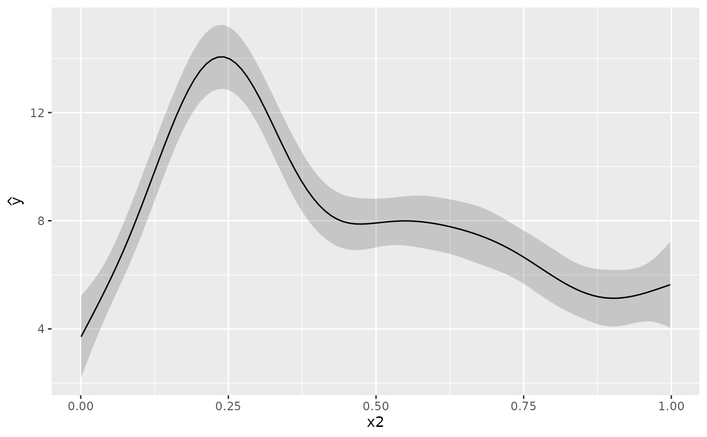

Conditional predictions from a GAM
Source:R/conditional-values.R, R/gamm4-methods.R, R/scam-methods.R
conditional_values.RdGenerate predicted values from a GAM, conditional upon supplied values of
covariates. conditional_values() is modelled after
marginaleffects::plot_predictions(), but with an intentionally simpler,
more restrictive functionality. The intended use case is for quickly
visualizing predicted values from a fitted GAM on the response scale. For
more complex model predictions, you are strongly encouraged to use
marginaleffects::plot_predictions().
Usage
conditional_values(
model,
condition = NULL,
data = NULL,
scale = c("response", "link", "linear_predictor"),
...
)
# S3 method for class 'gam'
conditional_values(
model,
condition = NULL,
data = NULL,
scale = c("response", "link", "linear_predictor"),
n_vals = NULL,
ci_level = 0.95,
complete = TRUE,
...
)
# S3 method for class 'gamm4'
conditional_values(model, ...)
# S3 method for class 'scam'
conditional_values(model, ..., unconditional = FALSE)Arguments
- model
a fitted GAM object.
- condition
either a character vector or a list supplying the names of covariates, and possibly their values, to condition on. The order of the values determines how these are plotted via the
draw.conditional_values()method; the first element is mapped to the x channel, the second element to the colour channel, the third toggplot2::facet_wrap()if no fourth element is present, if present, the fourth element is mapped to the rows and the third element is mapped to the columns ofggplot2::facet_grid(). To request a surface, group two numeric covariates in the first element, for examplelist(c("x1", "x2"), "treatment"). The grouped covariates supply the horizontal and vertical axes, in that order. The remaining elements supply facet columns and rows; there is no categorical colour channel. Use a nested list to supply axis values or helpers, for examplelist(list(x1 = c(0, 0.5, 1), x2 = "quartile"), "treatment"). At most four covariates are allowed, counting both surface axes.- data
optional data frame used to generate condition values and determine covariate classes. Explicit values in
conditiontake precedence. Other covariates use the fitted model's typical values. The rows ofdataare not used directly as a prediction grid.- scale
character; which scale should predictions be returned on?
- ...
arguments passed to
fitted_values().- n_vals
positive integer or
NULL; number of values to generate along each numeric axis. Forconditional_values()andconditional_differences(),NULL(the default) uses 100 for curves and 50 per axis for surfaces. Explicit values or helpers inconditionoverride generated values. Other numeric conditions use their five-number summaries unless explicit values or helpers are supplied.- ci_level
numeric; a number on interval (0,1) giving the coverage for credible intervals.
- complete
logical; if
TRUE(the default), retain all combinations of conditions. IfFALSE, retain only combinations of factor levels among the variables named inconditionthat occur in the fitted model's data. Numeric conditions are not filtered, and variables absent fromconditionremain at their typical values. Supplieddatadoes not change which combinations count as observed. An error is raised if no combinations remain.- unconditional
logical; include smoothing parameter uncertainty in the Bayesian covariance matrix, if available. Otherwise a warning is issued and the uncorrected covariance is used.
Examples
load_mgcv()
# Simulate an additive Gaussian response and fit a GAM
df <- data_sim("eg1", n = 200, seed = 2)
m <- gam(y ~ s(x0) + s(x1) + s(x2) + s(x3), data = df, method = "REML")
# Vary x2 while holding the other covariates at representative values
cv <- conditional_values(m, condition = "x2")
cv
#> # A tibble: 100 x 10
#> .row x2 x0 x1 x3 .parameter .fitted .se .lower_ci .upper_ci
#> <int> <dbl> <dbl> <dbl> <dbl> <chr> <dbl> <dbl> <dbl> <dbl>
#> 1 1 0.000663 0.437 0.486 0.512 mean 3.71 0.772 2.20 5.23
#> 2 2 0.0107 0.437 0.486 0.512 mean 4.13 0.690 2.78 5.48
#> 3 3 0.0208 0.437 0.486 0.512 mean 4.55 0.619 3.34 5.77
#> 4 4 0.0309 0.437 0.486 0.512 mean 4.98 0.563 3.88 6.08
#> 5 5 0.0410 0.437 0.486 0.512 mean 5.42 0.525 4.39 6.45
#> 6 6 0.0510 0.437 0.486 0.512 mean 5.87 0.506 4.88 6.86
#> 7 7 0.0611 0.437 0.486 0.512 mean 6.34 0.503 5.36 7.33
#> 8 8 0.0712 0.437 0.486 0.512 mean 6.84 0.511 5.83 7.84
#> 9 9 0.0813 0.437 0.486 0.512 mean 7.35 0.523 6.33 8.38
#> 10 10 0.0913 0.437 0.486 0.512 mean 7.89 0.536 6.84 8.94
#> # i 90 more rows
draw(cv)
